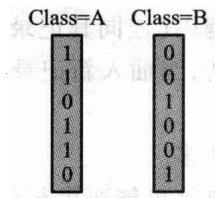

#第11章 索引技术
数据在磁盘上时，怎么快速定位。
- 11.1 线性索引、二级索引
- 11.3 倒排索引
- 11.4 B 树与 B+ 树
- 11.5 位图与签名
一条主线：每一种索引都在换同一件东西——用附加空间少读几次盘。
#11.1 线性索引

- 主文件：记录物理无序、长度可以不等
- 索引：按关键码排好序，每项是 (关键码, 存储位置)
索引小得多，可以整个读进内存二分；数据只在确定位置后读一次。
#二级索引：索引本身也放不下怎么办

再给索引建一层索引。二级索引常驻内存，一级索引在盘上。
稠密 2 层索引:
查不到 -> 读 1 页 (只读了索引页)
命中 -> 读 2 页 (索引页 + 数据页)多出来的那一页就是数据页——索引里没有就不必去读。
#1000 条记录：索引为什么有四层
每个数据页 4 条记录、每个索引页 4 项：
| 层 | 项数/页数 | 算法 |
|---|---|---|
| 数据页 | 250 页 | ⌈1000/4⌉ |
| 一级索引 | 63 页 | ⌈250/4⌉ |
| 二级索引 | 16 页 | ⌈63/4⌉ |
| 三级索引 | 4 页 | ⌈16/4⌉ |
| 顶层 | 1 页 | ⌈4/4⌉ |
一次查询沿“顶层 → 三级 → 二级 → 一级 → 数据页”下降。 层数由页扇出决定，不是由二叉树高度决定。
#11.2 静态索引：多分树

磁盘按页读写，所以一个索引结点就设计成恰好装满一页。 二叉树每个结点只有两个孩子，同样多的 key 会把树撑得很高。
覆盖一百万个叶页：二叉树约 20 层，100 路树只要 3 层。 页内要多比较几个分界 key，但整页已经在内存里——比多读一次外存页便宜得多。
#扇出是算出来的，不是拍的
页大小 4096 字节，一项「关键码 + 孩子页号」占 16 字节，扣掉页头 —— 大约放 250 项，扇出约 251。关键码变长或页头变大，扇出就掉。
数据库索引偏爱短关键码，不只为省空间，更为压低树高。
静态多分树批量装入时按页填满，之后结构不再变：
- 插入多出来的记录 → 进溢出区，查询多一次 I/O
- 删除 → 页变稀，利用率下降
- 攒够了 → 重组整棵树
所以它适合「一次建好、很少改」的文件，不适合频繁更新的目录。
#11.3 倒排索引
从「文档 → 它含哪些词」翻转成「词 → 它出现在哪些文档」。
文档 1: the quick brown fox
文档 2: the lazy dog
倒排表:
the -> [1, 2]
quick -> [1]
brown -> [1]
fox -> [1]
lazy -> [2]
dog -> [2]这就是搜索引擎的基础数据结构。
#倒排表的交并
// >>> inverted-intersect
/// 有序表求交。归并一遍，两个指针各走一趟，代价 O(n+m)。
[[nodiscard]] static std::vector<int> intersect(const std::vector<int>& left,
const std::vector<int>& right) {
std::vector<int> out;
std::size_t i = 0;
std::size_t j = 0;
while (i < left.size() && j < right.size()) {
if (left[i] < right[j]) {
++i;
} else if (right[j] < left[i]) {
++j;
} else {
out.push_back(left[i]);
++i;
++j;
}
}
return out;
}倒排表保持有序，所以求交是「双指针并行走一遍」，O(n+m)—— 不是 O(n×m)。
#倒排表求交：双指针只走一遍
数据: [1, 3, 8, 10]
结构: [2, 3, 8, 11]| 比较 | 动作 | 输出 |
|---|---|---|
| 1 vs 2 | 左指针前进 | 空 |
| 3 vs 2 | 右指针前进 | 空 |
| 3 vs 3 | 两边前进 | 3 |
| 8 vs 8 | 两边前进 | 3,8 |
| 10 vs 11 | 左指针前进并结束 | 3,8 |
代价 O(m+n)，不会为每个文档从头重找另一张表。
#短语查询要位置信息
光有「哪些文档含这个词」不够——"quick brown" 要求两个词相邻。
/// 短语查询：先求交把候选文档缩小，再用位置是否相邻过滤。
[[nodiscard]] std::vector<int> phrase_query(const std::vector<std::string>& phrase) const {
if (phrase.empty()) {
return {};
}
std::vector<int> candidates = and_query(phrase);
std::vector<int> out;
for (const int doc : candidates) {
for (const int start : positions_of(phrase.front(), doc)) {
bool adjacent = true;
for (std::size_t step = 1; step < phrase.size() && adjacent; ++step) {
adjacent = has_position(phrase[step], doc, start + static_cast<int>(step));
}
if (adjacent) {
out.push_back(doc);
break;
}
}
}
return out;
}#11.4 B 树：为磁盘设计的树
第 5 章的二叉搜索树在磁盘上很糟：树高 log2n， 每下降一层就是一次磁盘访问。
n=106 时 log2n≈20 次。
B 树的想法：把结点做大，让一个结点正好装满一页。
m 阶 B 树的高度是 logmn——m=100 时只要 3 层。
#B 树的结构

m 阶 B 树：
- 每个结点至多 m 个孩子、m−1 个关键码
- 除根外，每个结点至少 ⌈m/2⌉ 个孩子（半满）
- 所有叶子在同一层
「半满」和「叶子同层」这两条一起保证了树高是 O(logmn)。
#插入导致分裂

结点满了就从中间劈开，中间那个关键码升到父结点。
父结点也满就继续往上劈——根分裂时树才长高一层。
B 树是从叶子往上长的，这是它始终平衡的原因。
#B+ 树：数据全在叶子

- 内部结点只存关键码（当路标），不存数据
- 数据全部在叶子，叶子之间用指针串成一条链
两个直接好处：
- 内部结点更小 → 一页能装更多路标 → 树更矮
- 范围查询只需定位一次，然后顺着叶子链扫
#B+ 树插入 60：分裂传播到根
以 3 阶树为例，叶子装满后插入 60：
1. 沿分隔键下降到目标叶
2. 叶中插入 60，发生溢出
3. 叶分成左右两页，复制右页首键到父页
4. 父页若也溢出，再分裂并把中间分隔键上推
5. 根溢出时新建根，树高增加 1叶分裂保留全部记录并维护横向链； 内部页分裂搬的是导航键与孩子指针。
一次更新只沿根到叶的一条路径传播，不重建整棵树。
#范围查询：B+ 树的看家本领
/// 范围扫描：找到下限所在的叶，然后沿叶链横着走，不再回到内部结点。
[[nodiscard]] std::vector<std::pair<int, std::string>> range(int low, int high) const {
std::vector<std::pair<int, std::string>> out;
if (low > high) {
return out;
}
const Node* node = root_.get();
while (!node->leaf) {
++reads_;
node = node->children[child_slot(*node, low)].get();
}
while (node != nullptr) {
++reads_;
for (std::size_t i = 0; i < node->keys.size(); ++i) {
if (node->keys[i] > high) {
return out;
}
if (node->keys[i] >= low) {
out.emplace_back(node->keys[i], node->values[i]);
}
}
node = node->next;
}
return out;
}#叶子分裂与内部分裂不一样
叶子分裂: 中间那个关键码**复制**一份上去
(叶子仍然保留它, 因为数据在叶子)
内部分裂: 中间那个关键码**移动**上去
(内部结点只是路标, 不必留)这一处最容易写错，而且写错的表现很隐蔽： 范围查询会漏掉边界上的键，单点查询却全对。
实现见 code/ch11/bplus_tree/modern.hpp 的 split_leaf 与 split_internal。
#11.4.4 静态索引还是动态索引
| 工作负载 | 更合适 | 原因 |
|---|---|---|
| 几乎只读、可批量重建 | 静态索引 | 紧凑、读路径短 |
| 持续插入删除 | B/B+ 树 | 局部调整保持平衡 |
| 范围扫描多 | B+ 树 | 叶链顺序读取 |
| 物理地址必须稳定 | 静态索引 | 不因分裂搬动旧记录 |
- 静态索引把更新成本推迟到一次昂贵重组
- 动态索引把成本摊到每次分裂、借位与合并
选择的是由谁、在什么时候支付更新成本。
#11.5 位图索引

对取值很少的字段（性别、州、类别）， 给每个取值造一个位向量：第 i 位表示「第 i 条记录是不是这个值」。
// >>> bitmap-ops
/// 「与」：逐字 `&`。`word_ops()` 数的就是这里做了几次字运算。
[[nodiscard]] std::vector<std::size_t> select_and(const std::string& a,
const std::string& b) const {
return to_records(combine(bitmap(a), bitmap(b), Op::And));
}多条件组合退化成按位与——一次处理 64 条记录。
#位图的代价与压缩
- 字段取值 少 → 位图小，效率极高
- 字段取值 多（比如身份证号）→ 位图数量爆炸，完全不能用
位向量往往极其稀疏（大片的 0），所以要压缩：
// >>> bitmap-compression
/// 字级游程压缩：把连续相同的机器字压成「重复次数 + 字值」两项。
/// 低基数列的位图大片全 0，这样能压得很小；随机稠密位图反而会变大——如实呈现，不粉饰。
inline std::vector<std::uint64_t> run_length_encode(const std::vector<std::uint64_t>& bits) {
std::vector<std::uint64_t> out;
std::size_t i = 0;
while (i < bits.size()) {
std::size_t run = 1;
while (i + run < bits.size() && bits[i + run] == bits[i]) {
++run;
}
out.push_back(static_cast<std::uint64_t>(run));
out.push_back(bits[i]);
i += run;
}
return out;
}#位图逐位查询与尾部掩码
State=NY : 1 0 1 0 1 0
Class=A : 1 1 0 1 1 0
AND : 1 0 0 0 1 0结果是第 1、5 条记录（程序下标 0、4）。
机器实际按 64 位字做 AND/OR/NOT，一次处理 64 条记录。 记录数不是 64 的倍数时，NOT 会把末尾不存在的位也翻成 1， 所以最后一个字必须用 mask_tail 清掉越界位。
位图适合低基数属性；学号这类高基数列会生成大量稀疏位图。
#各种索引怎么选
| 场景 | 用什么 |
|---|---|
| 主文件无序、记录不等长 | 线性索引 |
| 索引本身也很大 | 二级 / 多级索引 |
| 全文检索、布尔查询 | 倒排索引 |
| 范围查询、有序遍历 | B+ 树 |
| 低基数字段、多条件组合 | 位图 |
| 只问「在不在」、允许误判 | 签名 / 布隆过滤器 |
#课堂讲解卡：索引是在空间与查询之间做交换
索引不保存“更多事实”，而是保存更适合定位的组织方式：线性索引、B/B+ 树解决范围与磁盘访问，倒排索引解决文本词项，位图索引解决低基数过滤。
#课堂例题：一次范围查询的路径
在 B+ 树中先从根走到包含下界的叶子，再沿叶子链顺序扫描到上界；同一查询若用哈希索引，只能定位等值键，无法自然顺序扫描。
#课堂例题答案：B+ 树范围查询
从根按分隔键走到包含下界的叶子，在叶子中定位下界后沿叶子链向右扫描到上界。哈希索引可快速等值定位，但不能自然给出连续范围。
#课末自检
- B+ 树为什么把记录集中在叶子？
- 内部结点分裂与叶子分裂传播的内容有何不同？
- 倒排表求交为什么可以用双指针线性完成？
- 选择索引时是否同时考虑选择性、更新成本和存储空间？
#课末自检参考答案
- B+ 树记录集中在叶子，内部结点只导航，叶子链支持范围扫描。
- 叶子分裂复制分隔键，内部结点分裂把中间键提升到父层。
- 排序倒排表可用双指针线性求交。
- 选择索引要同时考虑选择性、更新成本和空间。
#本章小结
- 索引的本质：用附加空间换更少的磁盘访问
- 线性索引让主文件可以无序、变长；多级索引解决索引本身太大
- 倒排索引把「文档→词」翻转成「词→文档」，交并靠有序做到 O(n+m)
- B 树把结点做成一页大，树高从 log2n 降到 logmn
- B+ 树数据全在叶子且串成链，所以范围查询只定位一次
- 位图索引适合低基数字段，多条件组合退化成按位与
#上机
python3 tools/check_code.py code/ch11/bplus_tree
python3 tools/check_code.py code/ch11/inverted_index- 用
page_reads()量一量：同样的查询，1 层索引和 2 层索引各读几页 - 在 B+ 树里做一次范围查询，数一数跨了几个叶结点
- 把叶子分裂的「复制」改成「移动」，看范围查询漏掉了什么
B+ 树的测试里有一条
validate()：每次插入删除后都检查 「所有叶子同层、每个结点半满、叶子链有序」这三条不变量。